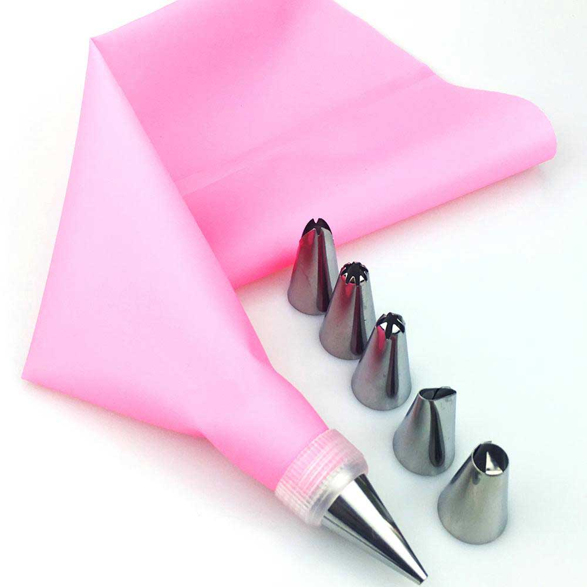

Cream Cheese and Raspberry Breakfast Cupcakes
These are nice, hearty cupcakes that make a sweet treat for a holiday breakfast or brunch. The recipe comes in three parts and has a yield of about 24 cupcakes, with some filling and frosting left over.
Directions
First, combine and bake your cupcakes, following the directions given on the back of the box for oven temperature, ingredients, and cool time. Line a cupcake tray with cupcake liners of your choice and portion out enough batter to fill each cup a little less than 3/4s full. Bake your desired amount of cupcakes. While baking, create your cream mixture and frosting. For the cream mixture, combine each ingredient in a large bowl, using a mixer or spoon until the mixture is well blended and smooth. Cover the bowl and place in the refrigerator. For the frosting, place the butter and jam in a mixer with a paddle attachment. Cream the two ingredients until fully incorporated. Add powdered sugar, one cup at a time while mixing, until you reach your desired consistency. If the frosting gets too thick, add milk to thin it. Add food coloring to adjust the tint of the frosting- which usually comes to a fairly light pink color- to taste. Cover and refrigerate. After baking, allow your cupcakes to cool fully. Then, using a butter knife or appropriate coring tool, create a middling-sized hole in the center of each cupcake. Save the removed cake circles. Fill a piping bag with the cream mixture and fill the cupcake hollows about halfway with the mixture. Replace the cake circles on top of the cream an press down gently until the top of the circles is only slightly above the top of the cupcake. Fill a second piping bag with the frosting and cover the tops of the cupcakes so that the divide is not visible. If the frosting begins to feel too liquid or isn't holding its form, place back in the refrigerator for a few minutes. After frosting, refrigerate the cupcakes until serving.
